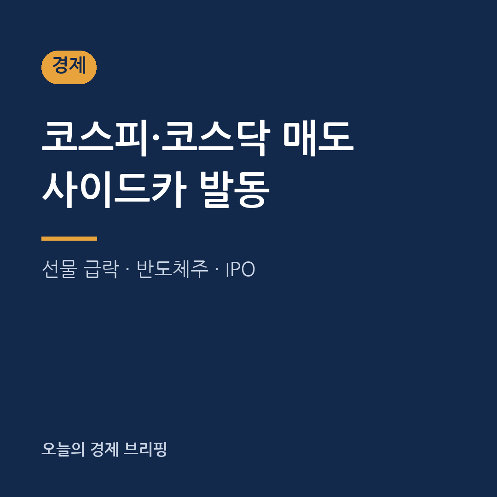
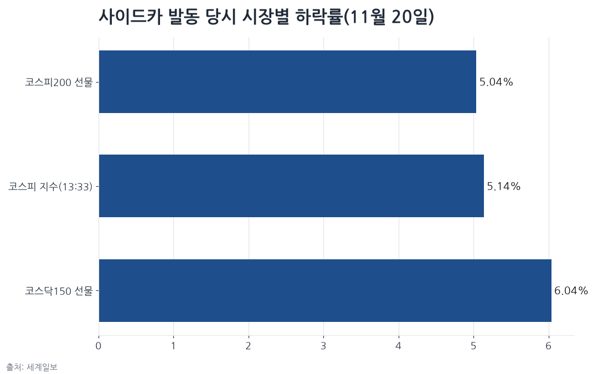

2026-11-20-1533-tistory 발행 키트 · 이 페이지는 검색에 노출되지 않습니다.
제목
카테고리
경제태그
본문 (그림·표 포함)
휴대폰 블로그 앱에서는 그림이 같이 붙지 않을 수 있어요. 그때는 [글자만 복사] 후 아래 이미지를 저장해 [그래프1]·[표1] 자리에 첨부하세요.

핵심 결론부터 정리합니다. 11월 20일 국내 증시는 미국 반도체·인공지능(AI) 관련주 급락의 영향으로 코스피와 코스닥 모두 선물 가격이 5~6%대 하락했고, 두 시장에서 차례로 매도 사이드카가 발동되었습니다. 같은 흐름 속에 연말 기업공개(IPO) 시장도 상장 철회가 이어지며 위축되고 있습니다.
▶ 배경: 미국 기술주 불안의 전이
세계일보 보도에 따르면 이번 하락의 직접적인 원인은 미국 반도체·AI 관련주의 급락으로 위축된 투자심리입니다. 해외 시장의 불안이 시차를 두고 국내 증시에 반영된 모습입니다.
국내 증시에서 비중이 큰 삼성전자와 SK하이닉스는 각각 약 6.7% 하락했습니다. 대형 반도체주의 낙폭이 컸던 만큼 지수 전체의 하락 폭도 확대된 것으로 정리됩니다.
▶ 핵심 내용 1: 사이드카 발동 현황
사이드카란 선물 시장이 급변할 때 프로그램 매매(사전에 설정한 조건에 따라 컴퓨터가 내는 대량 주문) 가운데 매도 호가의 효력을 일시적으로 정지시키는 제도입니다. 이날은 코스피가 오전 11시 54분, 코스닥이 오후 1시 28분에 각각 발동되었습니다.
코스닥의 발동 조건은 코스닥150 선물 가격이 기준 가격보다 6% 이상 하락하고 현물 지수가 3% 이상 내린 상태가 1분간 이어지는 경우이며, 발동 시 프로그램 매매 매도 호가의 효력이 5분간 정지됩니다. 코스닥 매도 사이드카는 이달 6일 이후 2주 만입니다.
코스피·코스닥 사이드카 비교
| 구분 | 발동 시각 | 기준 가격 | 발동 당시 선물가격 |
|---|---|---|---|
| 코스피(코스피200 선물) | 오전 11시 54분 | 796.00 | 755.84 |
| 코스닥(코스닥150 선물) | 오후 1시 28분 | 1,141.80(전 거래일 종가) | 1,072.80 |
출처: 세계일보
▶ 핵심 내용 2: 하락 폭 수치
발동 당시 코스피200 선물은 기준가 796.00 대비 755.84로 5.04% 하락했습니다. 코스닥150 선물은 전 거래일 종가 1,141.80 대비 69.00포인트 내린 1,072.80으로 6.04% 하락했습니다.
현물 지수인 코스피는 오후 1시 33분 기준 4,873.65로, 전 거래일보다 264.24포인트(5.14%) 낮았습니다.

▶ 핵심 내용 3: IPO 시장 위축
연합뉴스에 따르면 증시 급락과 기관투자자의 수요예측 부진이 겹치면서 연말 IPO 시장에서 상장 계획을 철회하는 사례가 이어지고 있습니다. 일부 공모주 청약에서는 물량이 모두 소화되지 않는 미달도 나타났습니다.
수요예측(공모가를 정하기 전에 기관투자자의 매수 의향을 조사하는 절차)이 부진하면 기업은 가격과 일정을 다시 검토할 수밖에 없습니다. 따라서 증시 변동성이 커진 시기에는 공모 일정이 바뀔 가능성이 높아집니다.
▶ 영향: 어디에 파급되는가
첫째, 반도체 업종 비중이 높은 포트폴리오는 지수보다 더 큰 평가손익 변동을 겪을 수 있습니다. 둘째, 신용·대출을 활용한 투자는 주가 하락 시 부담이 커질 수 있습니다. 셋째, 공모주 청약을 계획한 투자자는 일정 변경과 철회 가능성을 감안해야 합니다.
사이드카는 하락 자체를 막는 장치가 아니라 매도 주문이 한꺼번에 몰리는 속도를 늦추는 완충 장치라는 점도 알아 두어야 합니다.
▶ 확인할 점
다음 거래일 미국 반도체·AI 관련주의 방향, 국내 대형 반도체주의 낙폭 회복 여부, 예정된 공모 일정의 진행 또는 연기 공지를 순서대로 확인하시기 바랍니다. 한국거래소 공시와 각 증권사의 안내가 가장 정확합니다.
▶ 정리
1. 11월 20일 미국 반도체·AI주 급락 여파로 코스피(오전 11시 54분)와 코스닥(오후 1시 28분)에서 매도 사이드카가 발동되었습니다.
2. 발동 당시 코스피200 선물 5.04%, 코스닥150 선물 6.04% 하락했으며 삼성전자·SK하이닉스는 각각 약 6.7% 내렸습니다.
3. 증시 급락과 수요예측 부진으로 연말 IPO 시장에서 상장 철회가 이어지고 있어 공모 일정 확인이 필요합니다.
이 글은 공개된 뉴스를 바탕으로 정리한 정보 제공용 글이며, 투자 권유가 아닙니다.
출처 (본문 맨 아래에 붙여넣기 권장)
- 세계일보, 코스피 이어 코스닥도 매도 사이드카 발동 관련 기사, https://www.segye.com/newsView/20261120509019 - 연합뉴스, 증시 급락과 IPO 시장 위축 관련 기사, https://www.yna.co.kr/view/AKR20261120114800008